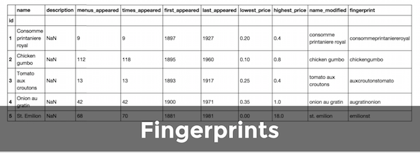
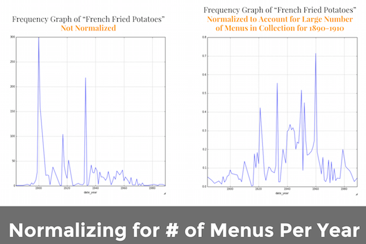
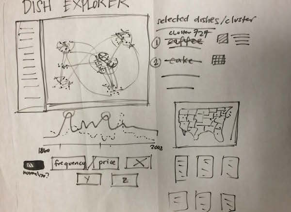
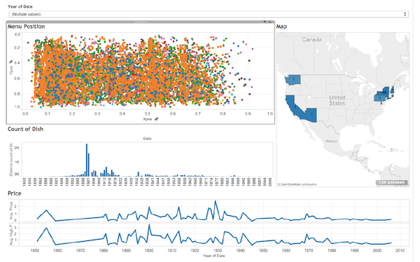

Menu Journeys
Information visualization exploring the menu collection of the New York Public Library
View WebsiteRoles
Exploratory Data Analysis
Data Visualization
Front-End Development
Tools
Tableau
d3.js
Highcharts
Bootstrap
The primary goal of the project was to help future researchers or students understand what data was contained in the restaurant menu archive, to help them have a better grasp of the distribution and scope of the information prior to them undertaking efforts to identify trends or correlations across different variables contained in the data set. To achieve this, we set out to create a website that shows the user how we analyzed, clustered, and wrangled the hand-transcribed menu data.
The secondary goal after laying out the data was to clean noisy data (incorrectly transcribed, non-US related, etc.), organize the remaining information into clusters and look into what we can possibly visualize in the selected data for the top 25 curated dish categories from the data set.
PROCESS
First we researched existing attempts to communicate food consumption related to socio-economic factors and/or food trends over time. We then looked various ways to visualize the data that was provided in the archive such as force-directed tree graphs, co-occurrence matrices, and tree maps. We also explored the menu dataset using Tableau to explore and manipulate data around prices, frequency, and menu location.
In the data cleaning and wrangling process, we clustered similarly named dishes and normalized their frequencies. Although the majority of dishes only appeared once, some dishes were stated several different ways and could have been grouped and identified as the same dish. To account for this, we created a "fingerprint" for each item, plus how many and which items fell under each fingerprint. Using these fingerprints, we formed 25 “mega clusters” to further group together similar items and 7 categories to group together the “mega clusters.”We also normalized the frequency of dishes according to the number of menus in record for that year.


Below is a paper prototype layout of the exploratory data visualization along with some planned interactions.

Below is an initial prototype of our visualization of menu item location, price, frequency, geographical distribution, and menus.

Below is a prototype of an exploratory dashboard visualization using Tableau showing menu item location, number of dishes in the dataset, price fluctuations, and location of the menus in the US.

While we were coding the force-directed graph, we encountered a nasty hairball obstacle and had to shift our course as a result.
In our final visualization, we chose appropriate graphic forms and principles for visualizing the data. In coding the layout and interactions, we used a bootstrap template to structure the webpage and tell the story of the archive. We evaluated the visualization with three users who were interested in menu archives to walk through our visualization and evaluated how well they understood what the visualizations represented and whether it provided new insights or takeaways.
OUTCOME
We went through several rounds of user testing with researchers throughout the development process to clarify our visualization strategy and our overall narrative in Menu Journeys.
One researcher had access to early iterations of the force-directed graph and called it quite confusing, to say the least, which was apparent to everyone else on our team as well. She suggested exploring alternative methods to visualize co-occurrence, such as a matrix, which also ultimately proved to be too challenging to implement under the constraints of our dataset and the deadline at hand.
Another researcher suggested a multi-pronged approach to our design -- using many visualizations woven together to tell a story -- which is the direction our team ultimately took. She cautioned against the use of an all-encompassing dashboard tool and instead wanted to be guided toward inspiring insights.
Perhaps the most valuable user-testing session was with a former researcher for the federal Food and Drug Administration. He particularly liked the feature in our cluster tree map that allowed him to directly search the NYPL menu archive based on dish names via hyperlink, which we implemented following feedback from our professor.